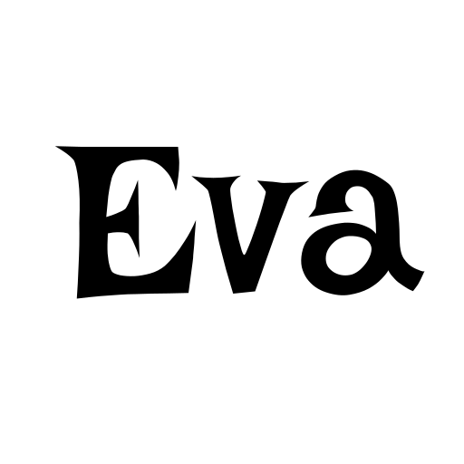

Eva
AI Character & Conversation Studio
v2.2.2 • Stable
License: MIT
Eva is an advanced client studio for chatting with and designing multi-dimensional AI characters. Unlike typical single-prompt web interfaces, Eva gives you a complete creative canvas: design deep personas across 14 distinct psychological fields with independent section regeneration, drop them into evolving worlds with dynamic reputation and lore tracking, and connect to any model (Groq, OpenRouter, OpenAI, or offline Ollama/LM Studio) with 100% local privacy and zero telemetry.
Key Highlights
- Three tailored visual studios: Companion Chatbot, Anime Roleplay, and World Simulator
- 14-field Persona Generator with section-by-section independent regeneration
- Universal BYOK: Groq, OpenRouter, OpenAI, and fully offline Ollama/LM Studio
- Edge-to-edge Android 16 APK + Windows, Linux, and Apple Silicon builds
Supported Platforms & Direct Downloads
Quick Install (Arch Linux Native)
sudo pacman -U https://github.com/AmanicX/eva/releases/download/v2.2.2/eva-2.2.2.pacman